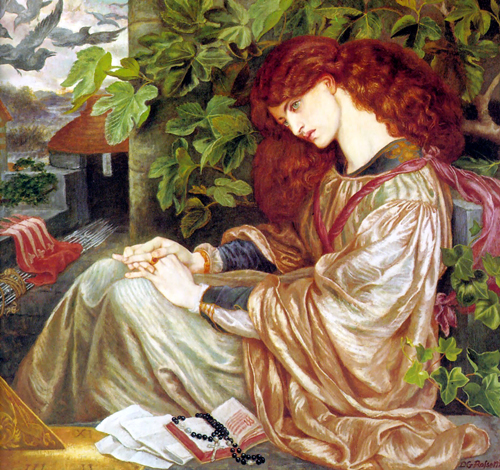
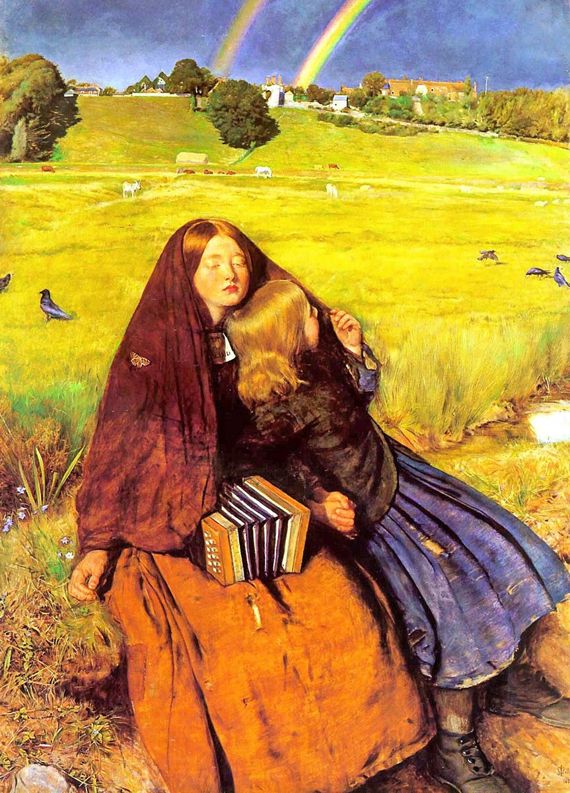
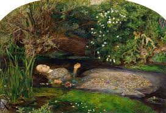

Características del Movimiento Prerrafaelita
Rechazo del Academicismo
Se alejaron de las convenciones académicas para buscar una mayor autenticidad y precisión.
Inspiración Medieval y Renacentista
Influenciados por la literatura, la mitología y las leyendas medievales.
Colores Vivos y Detalles Minuciosos
Utilizaron colores intensos y se enfocaron en la precisión de los detalles naturales y arquitectónicos.
Obras y Artistas Destacados
Dante Gabriel Rossetti

Fundador del movimiento, conocido por sus obras poéticas y místicas como "Beata Beatrix".
John Everett Millais

Su obra "Ophelia" es un ejemplo icónico de la atención al detalle y el uso vibrante del color.
William Holman Hunt

Conocido por sus trabajos profundamente simbólicos y detallados como "La luz del mundo".

Prerrafaelitas (1848-1900)
El movimiento prerrafaelita fue fundado en 1848 por un grupo de jóvenes artistas que buscaban volver a los detalles y la rica paleta de colores de los pintores anteriores a Rafael. Querían revitalizar el arte mediante la combinación de temas medievales con una técnica minuciosa y realista.